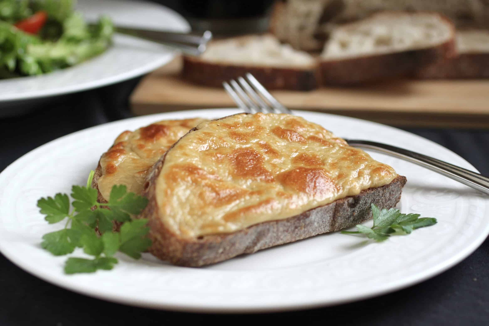

Welsh rarebit

Description
Welsh rarebit or Welsh rabbit is a traditional Welsh
dish made with a savoury sauce of melted cheese and various other ingredients.
It’s served hot after being poured over slices of toasted bread or sometimes
served in a chafing dish rather like a fondue.
Ingredients
- 225g grated, any strong Welsh cheese or Caerphilly cheese
- 1 tablespoon butter
- 2 teaspoons Worcestershire sauce
- level teaspoon dry mustard
- 2 teaspoons flour
- Shake of pepper
- 4 tablespoons beer, Guiness or milk (Guiness gives a stronger flavour)
- 4 slices bread toasted on 1 side only
Steps
- Put the cheese, butter, Worcestershire sauce, mustard, flour and pepper into a saucepan.
- Mix well and then add the beer, Guiness or milk to moisten. Do not make it too wet!!
- Stir over a gentle heat until all is melted, and when it is a thickish paste, stop stirring, and swivel it around the saucepan, which it will do quite easily.
- Leave to cool a little, and meanwhile toast the bread on one side only.
- Spread the rarebit over the untoasted side and brown under a hot grill.
- This mixture can be made and kept in the refrigerator for several days if required. Sweet white wine can be used instead of beer and gives a good flavour.